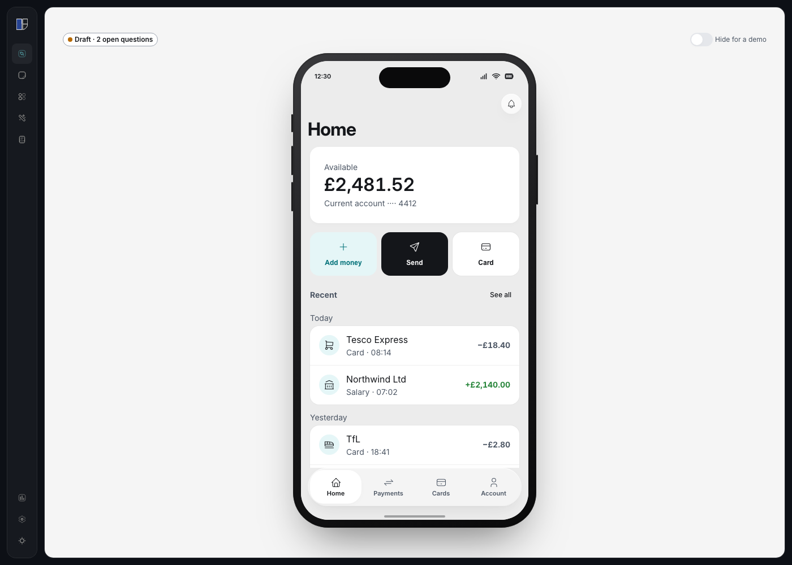
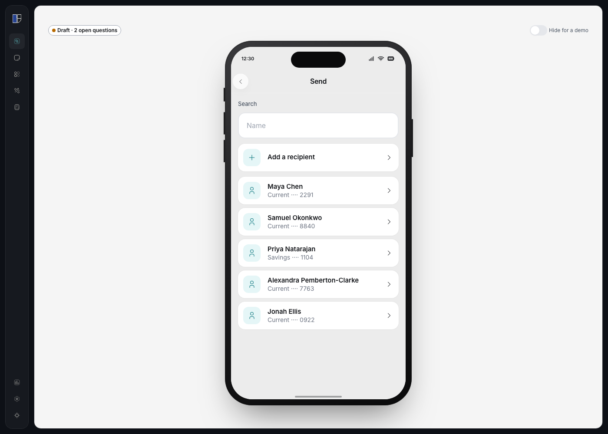

Everyday banking home
First look
The home does the job that was picked: the balance is first, then recent activity, and Send opens saved payees. The structure breaks on controls that look finished and do nothing: See all, Add money, Card, and the other tabs. On the send list, each person has a forward chevron and the tap does not leave the list, which the decision allowed, and the chevron still promises a next step.
Top 5
Effort is inferred from the kind of change, not an engineering estimate.
1. Controls that go nowhere P1
Why. See all, Add money, Card, and the Payments, Cards, and Account tabs look like navigation. Only Send and a transaction row do anything. A person hunting for the rest of their activity, or for a card, gets silence.
Fix. Hide or disable a control until its screen exists.
Effort. Low
2. A chevron on a row that stays put P2
Why. Each saved payee uses a forward chevron. The decision says a tap does not open an amount. The chevron still reads as a next step.
Fix. Drop the chevron until an amount screen exists.
Effort. Low
3. “See all” names a missing list P2
Why. The label commits to the rest of the activity. That list is not built.
Fix. Remove the label until the list exists.
Effort. Low
4. “No saved payee” P2
Why. An empty search uses a singular, internal word. The person typed a name and got jargon.
Fix. “No one with that name.”
Effort. Low
5. The transaction sheet is not marked as a dialog P2
Why. The sheet closes with Done and the dimmed area. The house pattern asks for a dialog role, aria-modal, and a labelled title. This overlay does not set them.
Fix. Put those three on the sheet.
Effort. Low
Walkthrough
| Step | Action | Risk | Issue |
|---|---|---|---|
| 1 | Open the home | Low | Balance and the newest transactions are on screen. The other tabs are already visible. |
| 2 | Tap See all, Add money, or Card | High | Nothing happens. DD-001, DD-004. |
| 3 | Tap a transaction | Medium | The sheet opens. It is not marked as a dialog. DD-003. Status words differ: Posted and Money in. DD-006. |
| 4 | Tap Send | Low | The saved-payee list opens. This path works. |
| 5 | Tap a person, or search a name that is not there | High | The row stays put behind a chevron. DD-002. An empty search says “No saved payee”. DD-005. |
Evidence


Findings
Location: home. Major [UX Heuristic: Consistency and standards] See all, Add money, Card, and the Payments, Cards, and Account tabs do not go anywhere.
Location: send list. Major [House: COMPANY-PATTERNS.md — Navigation conventions, forward chevron] Saved payee rows use a chevron. A tap stays on the list, by decision.
Location: transaction sheet. Minor [House: COMPANY-PATTERNS.md — Modal and sheet patterns] The sheet does not set role="dialog", aria-modal, or a labelled title.
Location: home, Recent. Minor [House: content style guide — specific] “See all” names a list that is not built.
Location: send list, empty search. Minor [House: content style guide — plain words] The empty state says “No saved payee”.
Location: transaction sheet. Note [House: content style guide — plain words] A card payment is “Posted” and a salary is “Money in”.
Location: project. Note [House: COMPANY-PATTERNS.md — Responsive device frames] The example pack asks for a desktop frame. This brief is iOS only.
Priority matrix
| ID | Priority | Finding |
|---|---|---|
| DD-001 | P1 | Dead controls on the home |
| DD-002 | P2 | Chevron on a payee that stays put |
| DD-004 | P2 | “See all” |
| DD-005 | P2 | “No saved payee” |
| DD-003 | P2 | Transaction sheet dialog contract |
| DD-006 | P3 | Posted versus Money in |
| DD-007 | P3 | No desktop frame |
Asks
- Which of the silent controls should stay visible before their screens exist?
- Should a payee row lose its chevron until an amount screen exists?
Record
findings.md— 2026-11-01, ux-pattern and contentdebt.md— DD-001 through DD-007, all openscreens/BankingHomePage.tsxscreens/SendListPage.tsxartifacts/snapshots/banking-home.pngartifacts/snapshots/send-list.png